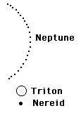

|

|
Triton has a retrograde orbit, moving clockwise around the planet Neptune while most other bodies in the solar system revolve counterclockwise. It may host what would be the only known liquid-nitrogen ocean.
Nereid has a highly eccentric orbit, taking it 1.4 million to 9.7 million kilometers from Neptune. Nereid was discovered in 1949. The color of Nereid is unlike any normal satellite or asteroid, varying in reflected intensity by a factor of four during 1987 observations. This may mean it is irregular in shape, but its estimated diameter of 660 km is over the threshold of about 400 km which is thought to be enough to make objects spherical. Because of its eccentric orbit, Nereid may be a captured asteroid. ( Weisburd, Science News 133, June 11, 1988 p374)
|